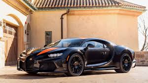

Introduced in 2016, the Bugatti Chiron took over where the Veyron left off, setting new benchmarks in speed, luxury, and engineering sophistication.
• 8.0-liter quad-turbocharged W16 engine producing 1,500 hp (Super Sport 300+ version: 1,577 hp).
• 7-speed dual-clutch transmission.
• All-wheel drive with advanced torque vectoring.
• 0–100 km/h in 2.4 seconds, 0–300 km/h in under 13.1 seconds.
• Top speed: 420 km/h (limited) – 490.48 km/h record for Chiron Super Sport 300+.
• Iconic C-shaped side profile for aerodynamics and engine cooling.
• Interior crafted from the finest leathers, aluminum, and carbon fiber.
• Digital-analog hybrid dashboard for both luxury and performance.
• Extremely limited production, only 500 planned.
• Starting price: €2.4 million.
• Customization through Bugatti’s "Sur Mesure" program.
The Bugatti Chiron is the ultimate hypercar, offering unmatched speed, craftsmanship, and exclusivity—built for those who demand perfection at any cost.
